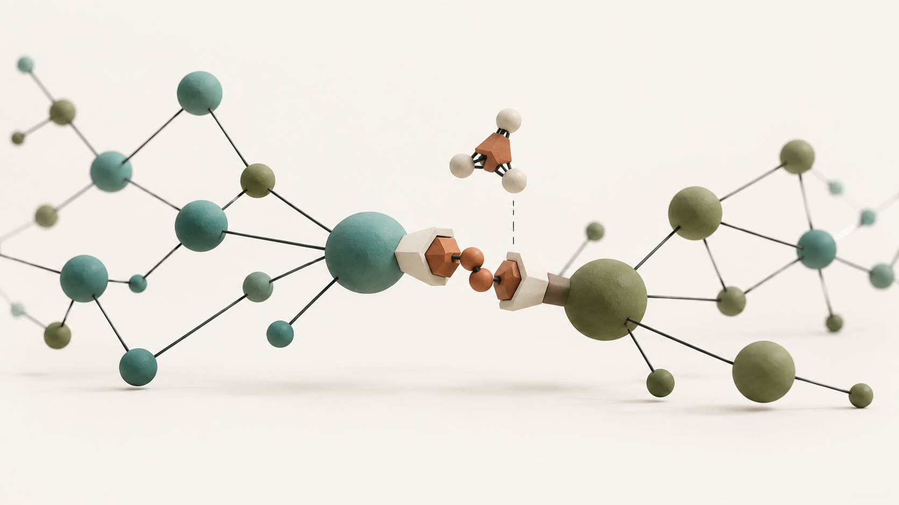

Biomolecular Design Lab · IBS
Engineering the Brain through Biomolecular Design
We design molecular technologies to visualize, control, and remodel cellular communication in the brain.
Explore our research
Our scientific philosophy
VisualizeControlRemodel
01 / Our vision
Decoding and Engineering Communication in the Brain
The brain is a complex communication network in which neurons, glial cells, and other cell types continuously exchange information.
We combine neuroscience with synthetic biology to design molecular technologies that allow us to observe, control, and reshape these interactions.
Our goal is to understand how molecular and cellular interactions give rise to synaptic connectivity, neural circuit function, and behavior.
02 / Research philosophy
How We Engineer the Brain
-
01
Visualize
See the invisible.
We develop genetically encoded tools to visualize molecular, synaptic, and cellular dynamics in the living brain.
- SynapShot
- Molecular biosensors
- Synaptic dynamics
-
02
Control
Control with precision.
We develop molecular optogenetic technologies to manipulate specific biological processes with high spatial and temporal precision.
-
Molecular Optogenetics
- Activation
- OptoSTIM1 · monSTIM1
- Inhibition
- LARIAT
-
-
03
Remodel
Reshape connectivity.
We develop synthetic systems to selectively remodel synaptic connections and investigate how circuit structure shapes brain function.
- SynTrogo
- Connectome editing
- Synaptic remodeling
Featured research
From Mapping the
Connectome to Editing It
Synthetic Trogocytosis (SynTrogo)
Mapping neural connections has transformed our understanding of brain organization. But understanding how circuit structure shapes function also requires the ability to selectively modify those connections.
SynTrogo engineers neuron–astrocyte interactions to induce controlled remodeling of synaptic connectivity in targeted neural circuits.
This approach provides a foundation for moving from passive observation of the connectome toward active manipulation of neural connectivity.
Nature Communications 17:3490 (2026).